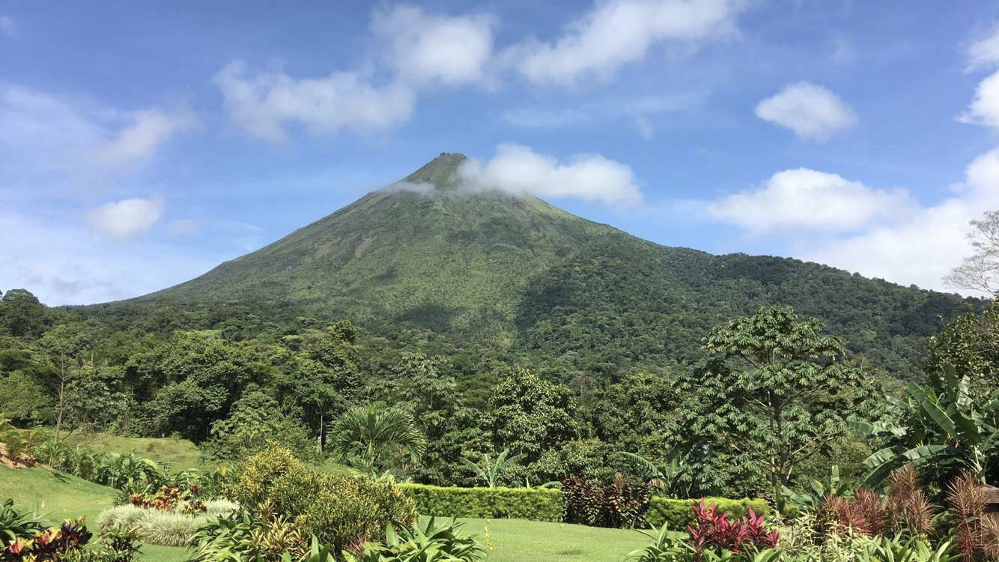
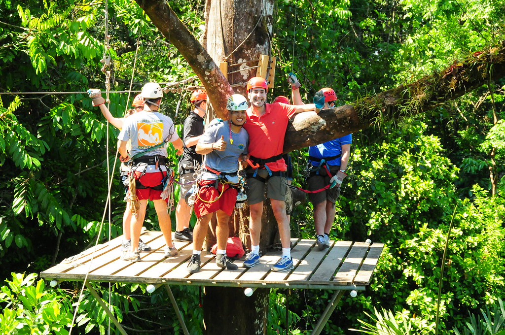
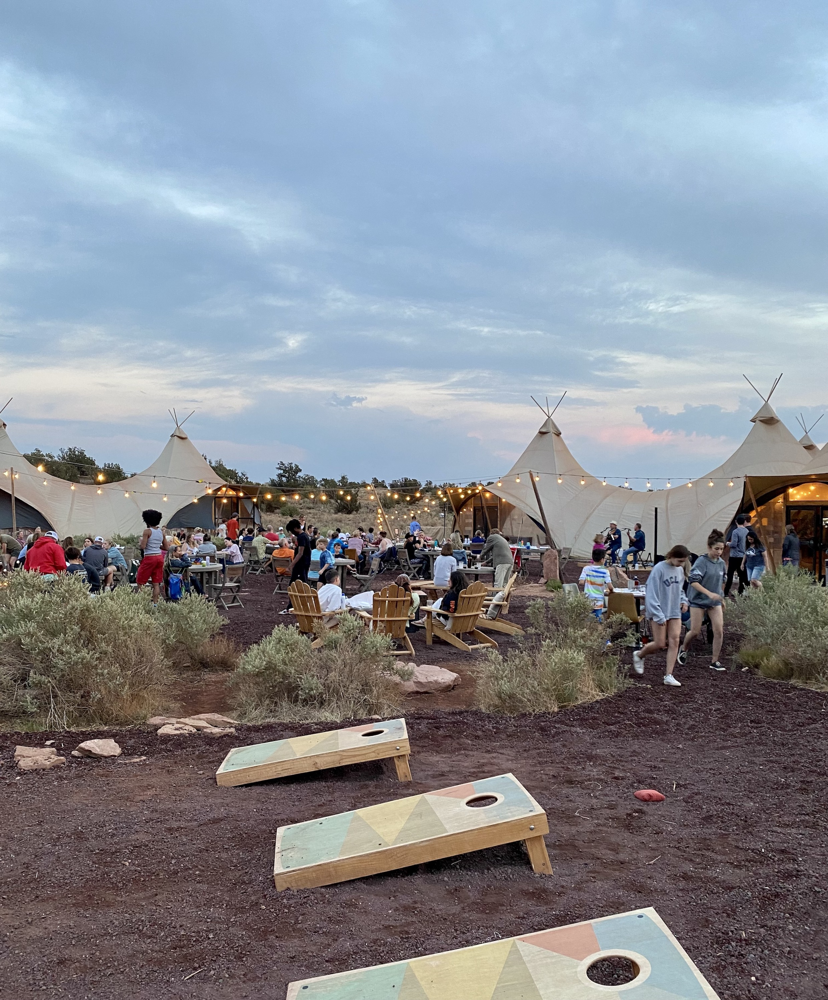
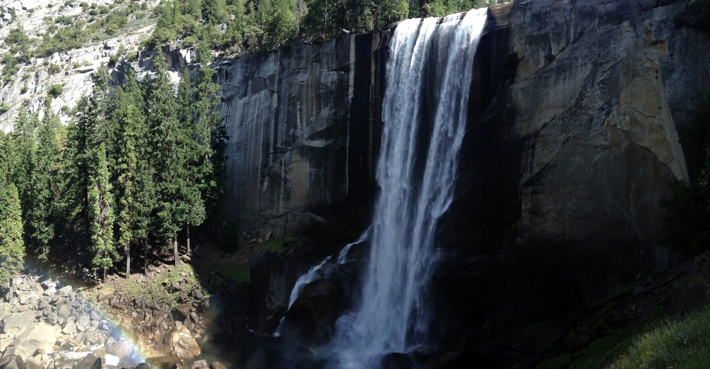
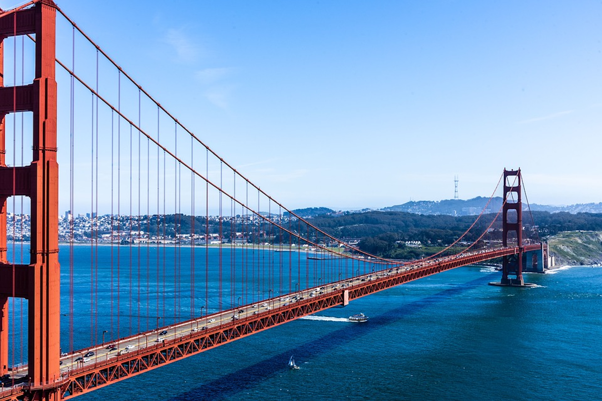
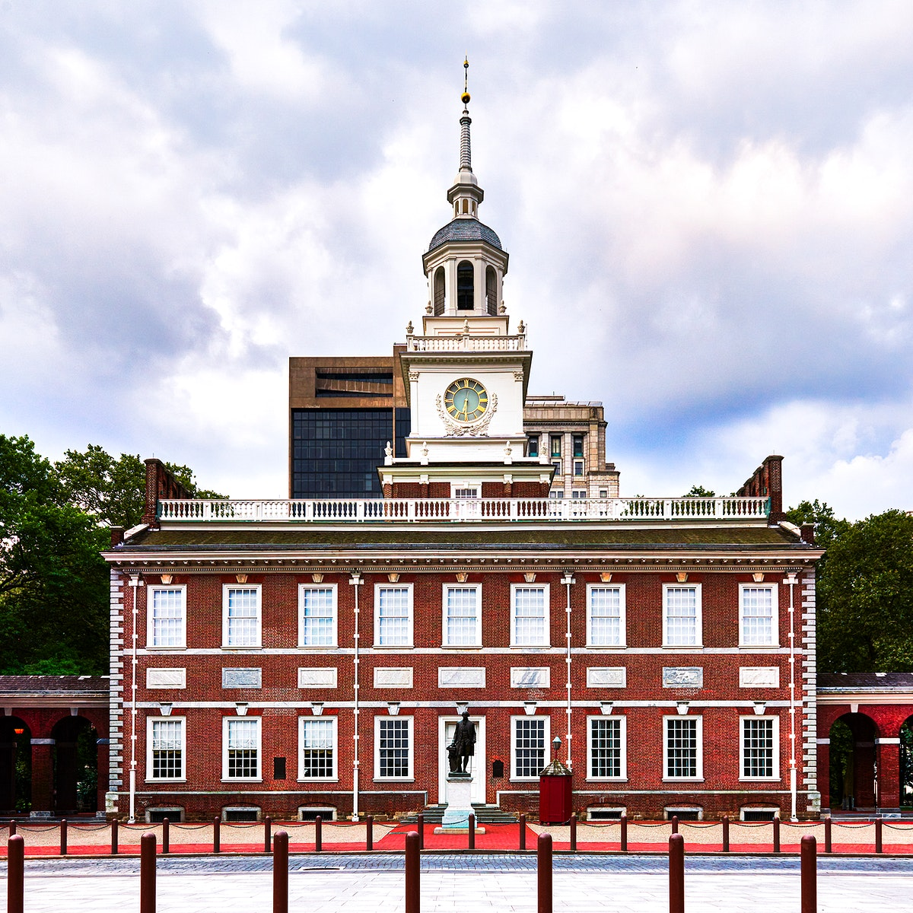
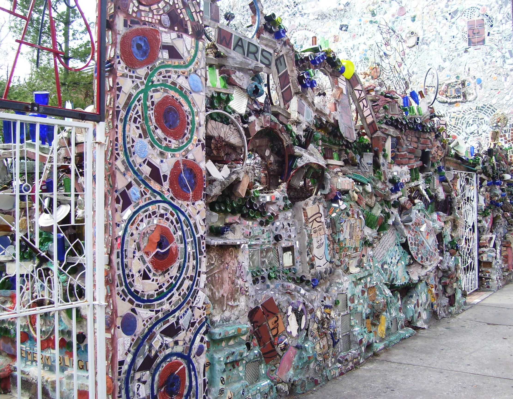

NORTH AND CENTRAL AMERICA
Up next is more vacations and staycations! Starting in Central America, one of my favorite trips was Costa Rica. There my family and I hiked around the Arenal Volcano and soared through the rainforest on ziplines!
 Then out west, we explored California and Arizona. In California, we took in the natural beauty of Yosemite and crossed the Golden Gate Bridge. In Arizona, we 'glamped' which is glamourous camping. The camp site featured an adorable common area filled with board games, cornhold, and good old family fun.
  Finally, I always love staycations in Philadelphia. Philly has a rich history, and the Old City colonial architecture makes me happy! There is a strong art community as well. One of my favorite sites is the Magic Gardens.
 